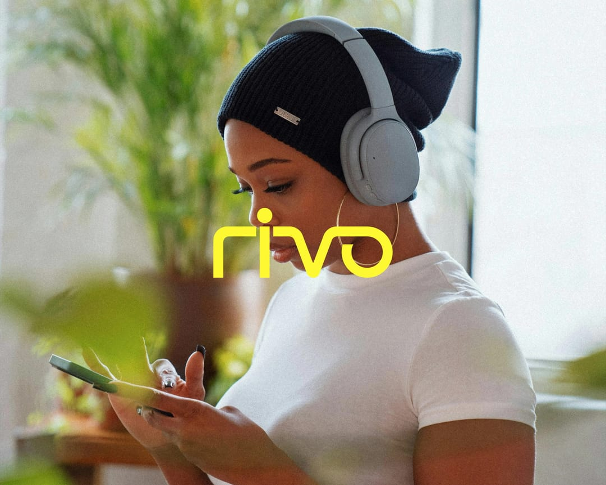
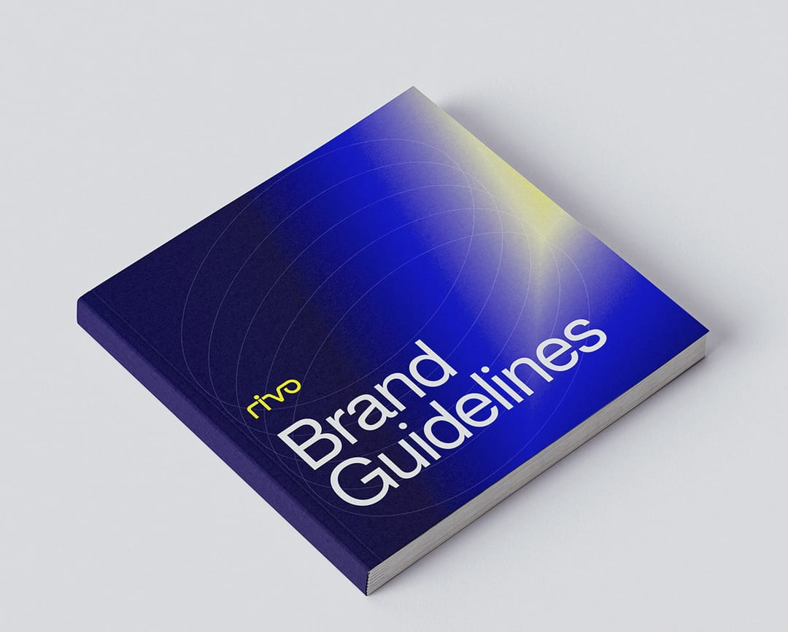
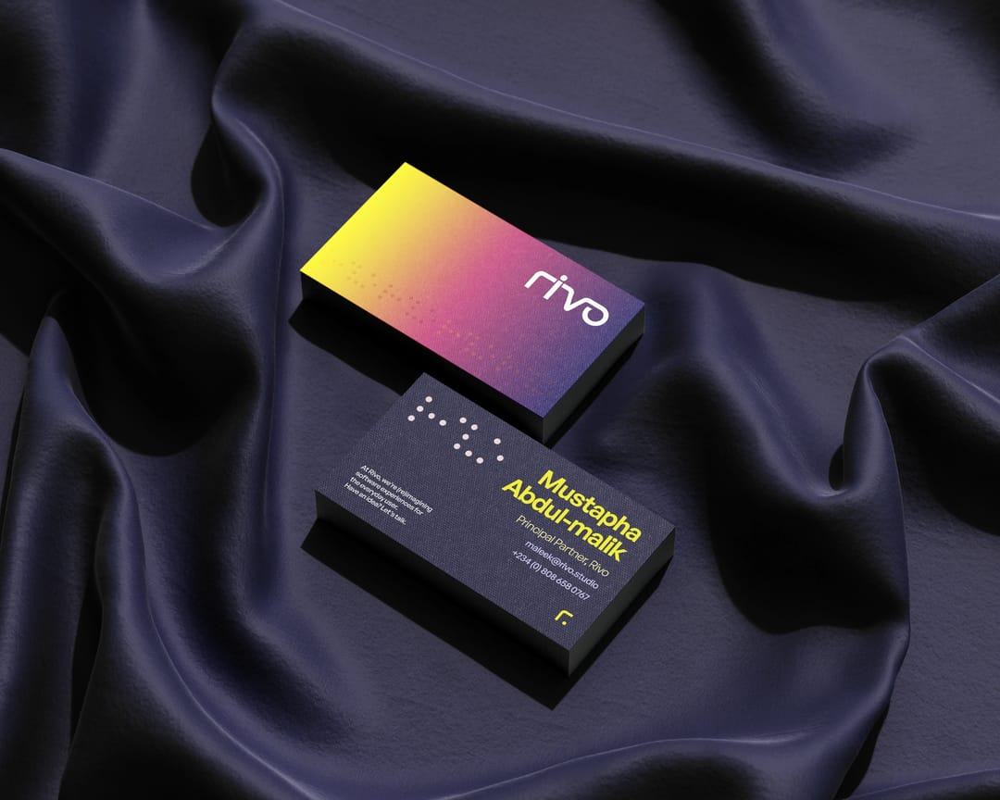
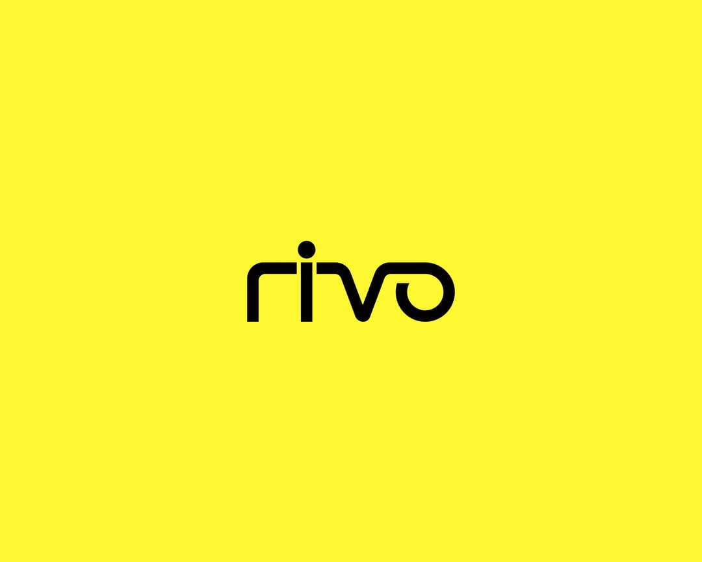
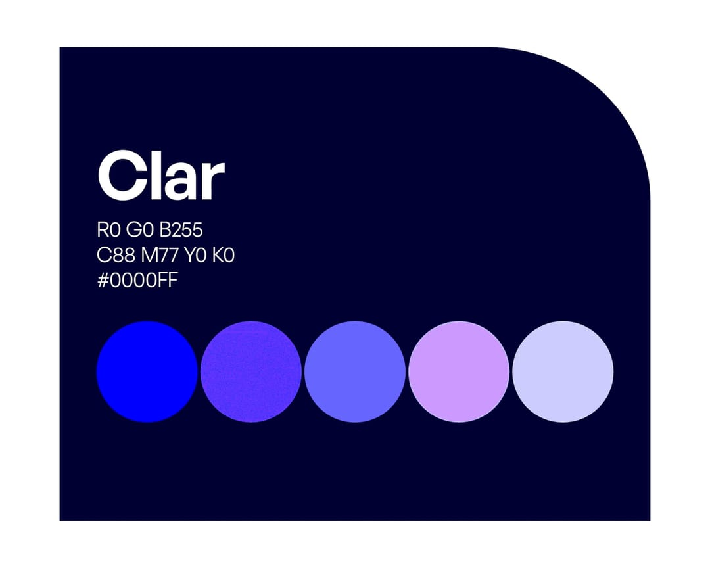
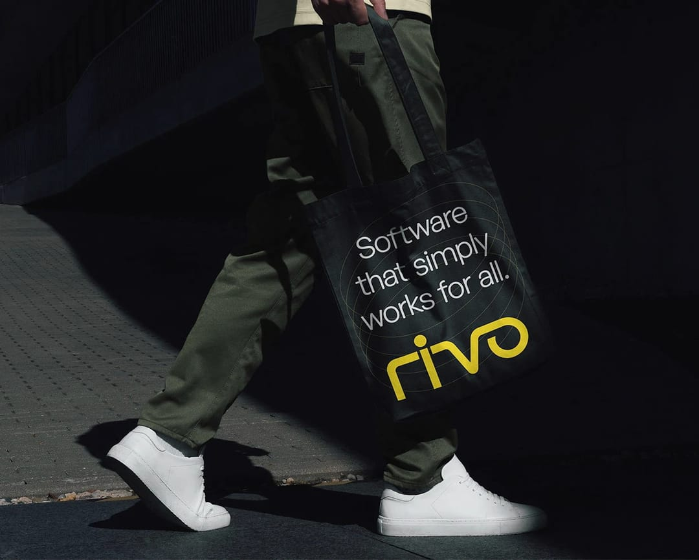
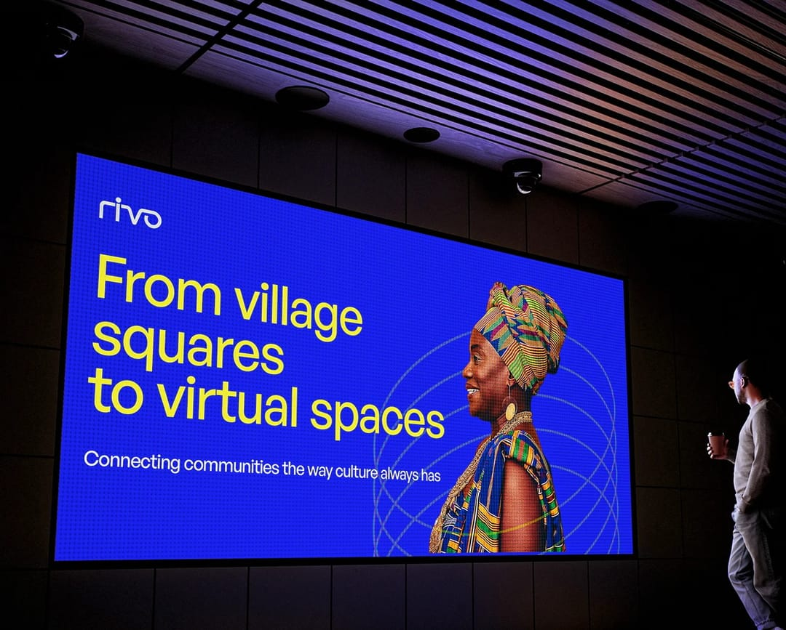
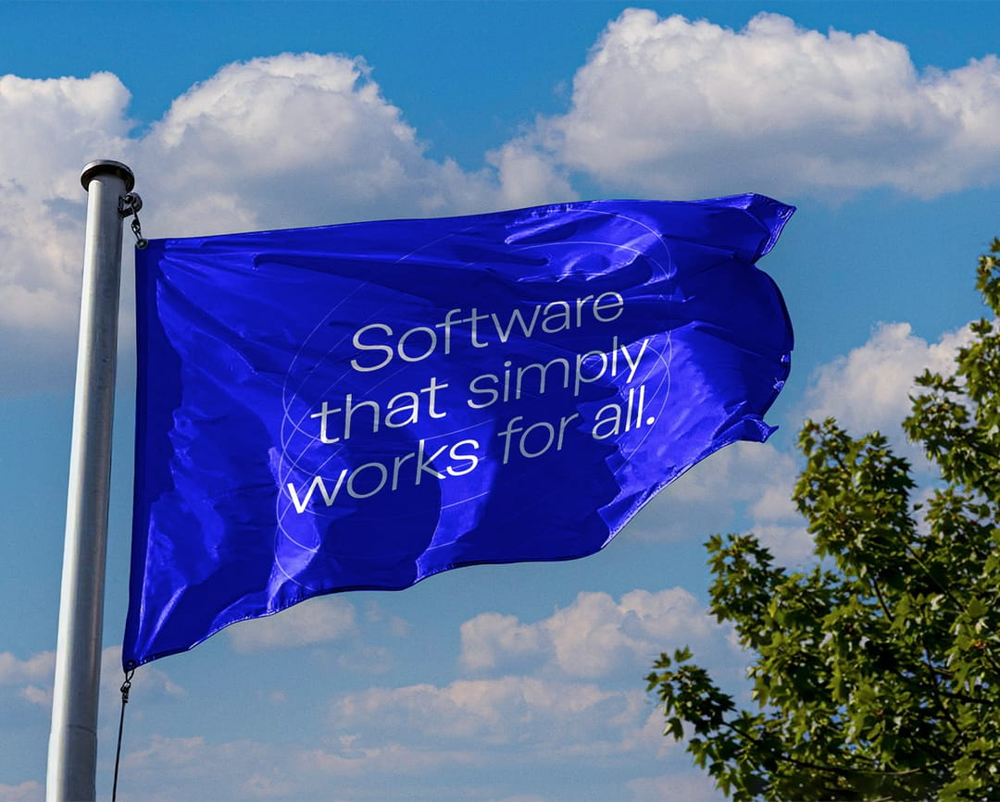

Selected case study / Software studio
Rivo Studio
A software studio positioned around access, built to feel useful before it feels technical.
- My role
- Brand strategy, identity design and guidelines
- The constraint
- Make a software studio feel capable without relying on cold, technical category codes
The decision
One rule, from the kit to the application
Keep the wordmark open, let Clar blue carry the field, and reserve yellow for the signal. The guidelines cover shows the handoff document; the stationery visualisation shows a proposed application of the rule.
Guidelines cover and stationery visualisation; public production is not established.
The Call
Soften the technical signal
Rivo Studio needed an identity for a software practice positioned around access. The work had to make that intention visible in the brand itself, rather than leave it as a statement beside the design.
The category often uses complexity as shorthand for capability. Rivo needed to communicate technical confidence while remaining clear, approachable and useful across everyday brand materials.
I worked from the spoken name, /ˈraɪvoʊ/, then tested how it behaved at small sizes, in strong colour pairings and beside practical information.
The wordmark removes hard corners and keeps the letterforms open. Its job is to feel assured without becoming severe, giving the studio a recognisable voice before supporting graphics are added.
The System
One primary field, one signal colour
Clar blue anchors the identity against deep navy. Signal yellow is reserved for emphasis, allowing hierarchy to come from a controlled contrast rather than a growing collection of accents. The guidelines record how the wordmark, colour and typography work together.
What Survived
Keep the identity usable across formats
The same wordmark, short proposition and yellow signal were extended from stationery and a carried object to an environmental scale without repeating a fixed composition.
The delivered identity included guidelines, stationery and a practical application system that another designer could carry forward. The tote, flag and stage images are visualisations, not proof that every object was produced.
The record contains no confirmed budget figures or delivery calendar. The supported result of this stress test is consistency across scales, not a claim about money or time saved.
First Contact
What another designer can take forward
The guidelines are the clearest documented first contact for the people who must apply the system after handoff. They explain how another designer can use the wordmark, colours and typography rather than relying on the original presentation.
The identity is also visualised on carried and environmental surfaces. Those mockups suggest how a wider audience might meet Rivo, but do not establish a public launch or customer response.
The Results
A usable identity, with measurable adoption still unknown
The final identity gives Rivo a recognisable wordmark, a stable blue field, one signal colour and a documented set of rules for applying them across brand materials.
The documented result is a complete identity kit: a recognisable Rivo wordmark, controlled Clar blue and signal-yellow palette, stationery applications and guidelines another designer can refer to. The deliverables shown here substantiate that scope.
No verified audience recognition, customer adoption or business-performance measurements accompany the project. The evidence supports a reusable identity system, not an invented impact figure.

A campaign application pairs the signal-yellow wordmark with an everyday technology scene.

Guidelines cover: a handoff document, not a legible excerpt of its internal rules.

Stationery visualisation: the open wordmark, Clar blue and signal yellow tested at a small, information-heavy scale.

The softened Rivo wordmark shown on the identity's signal-yellow field.

Clar blue and its tint range form the primary colour family.

Tote visualisation: a proposed portable use of the brand proposition.

Stage-screen visualisation: a proposed environmental use of the identity.

Flag visualisation: a proposed outdoor use of the proposition and wordmark.
Stationery visualisation: the open wordmark, Clar blue and signal yellow tested at a small, information-heavy scale.
Guidelines cover: a handoff document, not a legible excerpt of its internal rules.